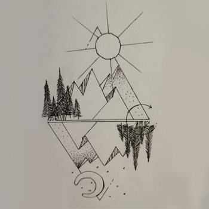
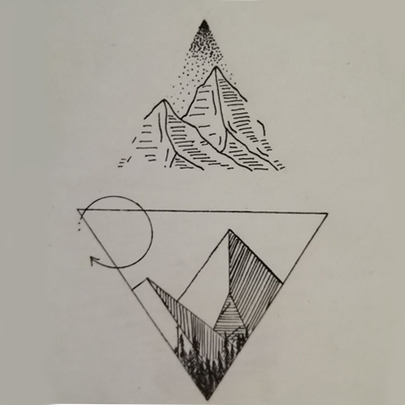
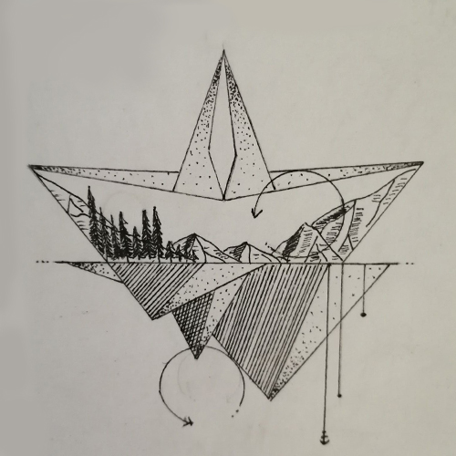

Выполнила: Давыдова Л.А. Студентка гр. 17ИВ1бп ПензГТУ, 2020г.
Доброго времени суток!
Эта страница посвящена одному из моих любимых хобби - рисованию.
Я начала рисовать, когда была еще маленькой. Мама с папой очень часто дарили мне фломастеры самых разных цветов, цветные карандаши, детские раскраски и просто бумагу для рисования. Мне нравилось изображать на чистом листе что-нибудь красивое, растения, животных, иногда людей. Поэтому я нередко делала открытки для мамы и папы.
Однако, первые мои рисунки были не самыми лучшими. Кое-что получалось криво, кое-что вообще не получалось. Тем не меннее, я продолжала стараться. Теперь, мне кажется, я рисую довольно неплохо.
Мое любимое направление - портрет. Мне нравится рисовать лица людей так, чтобы по рисунку можно было без труда узнать, кто на нем изображен. Хотя, иногда, я рисую абстрактные изображения в жанре минимализм:
  В разделе Gallery вы сможете увидеть несколько моих работ, а в разделе History ознакомиться с историей возникновения рисования, как предмета искусства.